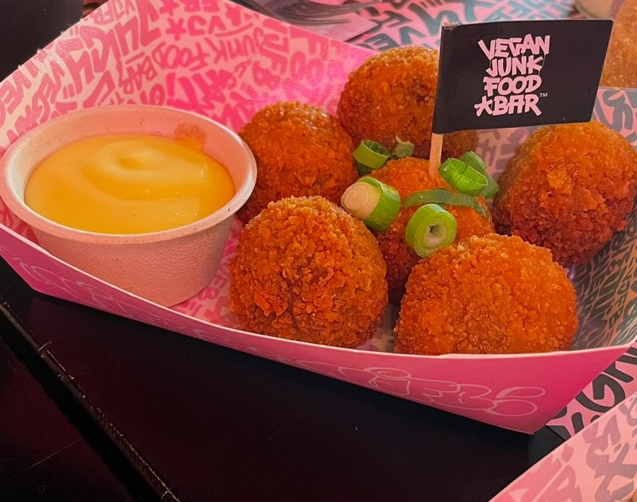

junk food vs vegan junk food
Waarom is het nu tijd om over te stappen naar een vegan dieet?
een aantal belangrijke statistieken die je waarschijnlijk al weleens gehoord heb. De vlees industrie is de grootste oorzaak van ontbossing in de hele wereld ongeveer 77 procent van het boerenland gebruikt voor de veeteelt om vlees en zuivel te produceren. Ook produceren deze koeien methaan wat 28x zo slecht is voor het milieu als Co2.

Maar ik vind het niet lekker!
Veel mensen denken bij een veganistisch dieet alleen aan vleesvervangers die ze ooit een keer in de supermarkt gegeten hebben of al het eten wat ze nu niet meer kunnen eten. Maar dat hoeft helemaal niet er komen steeds meer initiatieven die laten zien dat je echt lekker eten kan maken zonder het gebruik van dierlijke producten. Neem bijvoorbeeld deze bitterballen van de vegan junk food bar. Ziet er net echt uit toch?
De opkomst van vegan junk food
De toekomst van veganistisch eten ziet er goed uit. Binnenkort kan je al het eten waar je van droomt eten zonder dat je daarbij onnodig veel schade toericht aan de wereld. Zo kan je al je behoeften aan een lekkere snack van de snackbar stillen door de veganistische variant te kiezen. Mooi toch?